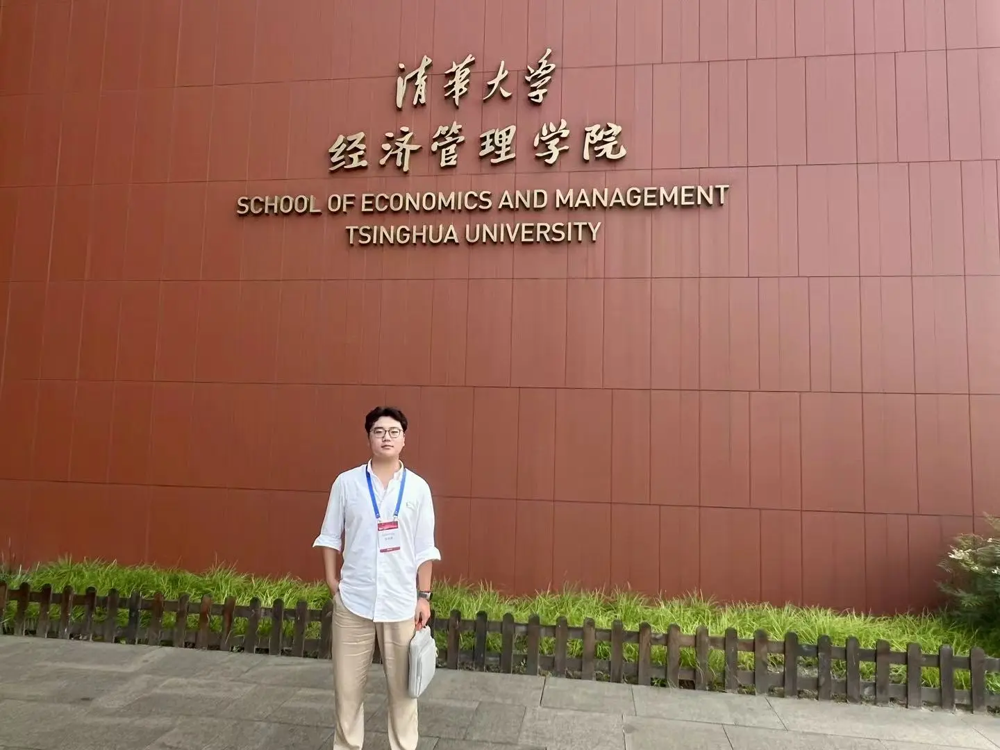
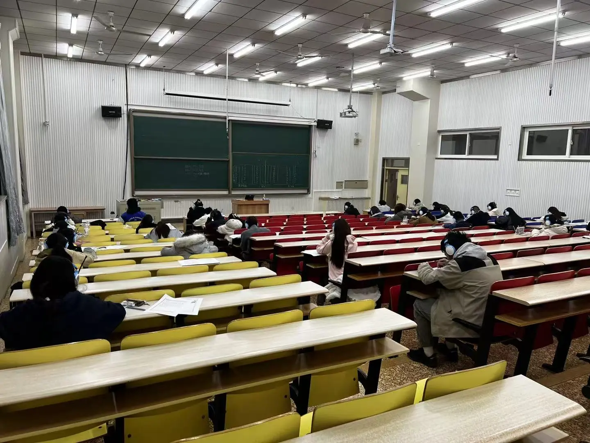

INDEPENDENT FIRST AUTHOR · 2026
极端地缘政治冲击下 A 股企业市场韧性识别研究
基于多源 ESG 评级与可解释机器学习
整合 Wind、华证、商道、CNRDS、润灵环球五家机构的 ESG 评级与 iFinD 行情数据，构建 4,840 家 A 股上市公司的长期 ESG 水平、评级分歧和市场韧性指标。
行业固定效应、替代因变量与事件研究结果显示：ESG 综合水平与市场韧性显著正相关，评级分歧与市场韧性显著负相关。XGBoost 测试集 R² = 0.508。
FINANCIAL ENGINEERING · UNDERGRADUATE
FinTech, Green Finance & Behavioral Finance
金融工程本科生，关注金融科技、绿色金融与行为金融。尝试将实证研究、多源金融数据和可解释机器学习结合起来，理解企业风险与资本市场韧性。
金融工程 · 本科
专业排名 2 / 21 · 前 10%
RESEARCH
SELECTED WORK
从清晰的问题出发，用可检验的证据解释金融市场中的风险、分歧与韧性。
INDEPENDENT FIRST AUTHOR · 2026
整合 Wind、华证、商道、CNRDS、润灵环球五家机构的 ESG 评级与 iFinD 行情数据，构建 4,840 家 A 股上市公司的长期 ESG 水平、评级分歧和市场韧性指标。
行业固定效应、替代因变量与事件研究结果显示：ESG 综合水平与市场韧性显著正相关，评级分歧与市场韧性显著负相关。XGBoost 测试集 R² = 0.508。
ARCHIVE
ACADEMIC EXPERIENCE
营员 · 金融科技方向
营员 · 金融科技方向
参会者 · 金融科技、绿色金融与行为金融
5 场 · AI 与量化投资、ETF、金融科技、ESG 与期刊发表
AWARDS & COMPETITIONS
第一阶段国家级三等奖 · 第二阶段国家级优秀奖
Microsoft Office 智能办公国家级三等奖
市级一等奖 / 市级三等奖
校级优秀学生干部
RESEARCH
行业固定效应回归 · 事件研究 · 稳健性检验MODELING
XGBoost · SHAP · 指标构建 · 数据可视化TOOLS
Excel · Stata · R · MATLAB · LaTeXLANGUAGE
CET-4 497 · 普通话二级甲等 91.5JOURNEY
ACADEMIC & CAMPUS LIFE
学术活动、学生组织与日常生活，共同构成我理解世界和组织行动的方式。

以开放的姿态进入更广阔的经济与管理学术现场。

创始社长；组织 2 场百人规模活动，累计参与超过 400 人。
研究之外，也保留对生活、动物与偶然相遇的兴趣。
Based in Beijing · Open to research, competitions and ideas.
CONTACT
欢迎就金融研究、数据分析、学生竞赛或新的想法与我交流。